3. Flink¶
3.1. 环境搭建¶
3.1.1. Local本地模式¶
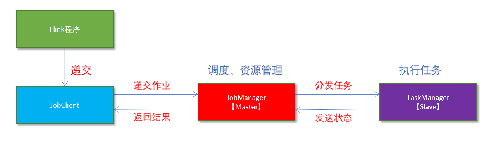
3.1.1.1. 原理¶
1.Flink程序由JobClient进行提交
2.JobClient将作业提交给JobManager
3.JobManager负责协调资源分配和作业执行。资源分配完成后，任务将提交给相应的TaskManager
4.TaskManager启动一个线程以开始执行。TaskManager会向JobManager报告状态更改,如开始执行，正在进行或已完成。
5.作业执行完成后，结果将发送回客户端(JobClient)
3.1.1.2. 基本使用（本地集群）¶
启动命令
在Flink的bin目录下：
启动
./start-cluster.sh
停止
./stop-cluster.sh
Web-UI：
node1:8081
3.1.2. StandAlone独立集群模式¶
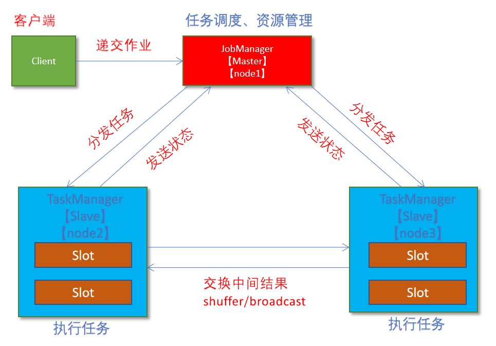
3.1.2.1. 原理¶
client客户端提交任务给JobManager
JobManager负责申请任务运行所需要的资源并管理任务和资源
JobManager分发任务给TaskManager执行
TaskManager定期向JobManager汇报状态
3.1.2.2. 环境配置¶
编辑flink-conf.yml文件
vim /export/server/flink/conf/flink-conf.yaml hobmanager.rpc.address:node1
编辑master文件
node1:8081
修改slaves
node1 node2 node3
分发安装包
scp -r flink-1.10.0/ node2:$PWD scp -r flink-1.10.0/ node3:$PWD
3.1.2.3. 基本使用¶
启动集群
/export/server/flink/bin/start-cluster.sh
访问Web-UI：
node1:8081
3.1.3. StandAloneHA高可用模式¶
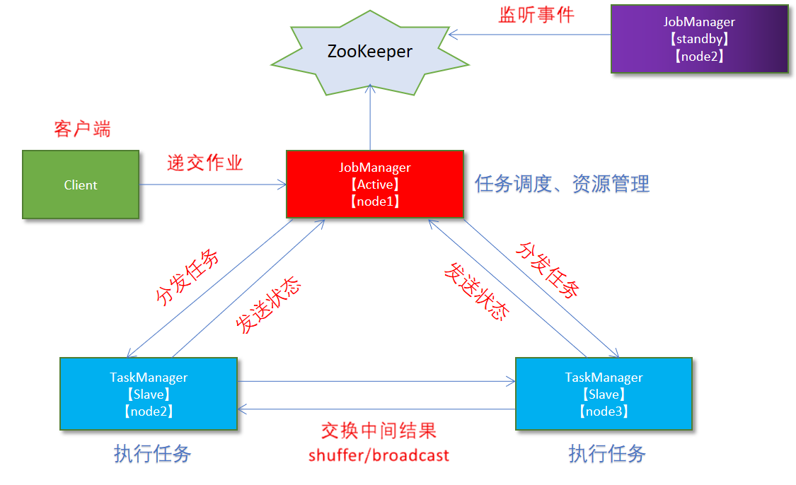
3.1.3.1. 配置¶
机器规划
- 服务器: node1(Master + Slave): JobManager + TaskManager - 服务器: node2(Master + Slave): JobManager + TaskManager - 服务器: node3(Slave): TaskManager
修改flink-conf.yml
vim /export/server/flink/conf/flink-conf.yaml
#开启HA，使用文件系统作为快照存储 state.backend: filesystem #启用检查点，可以将快照保存到HDFS state.backend.fs.checkpointdir: hdfs://node1:8020/flink-checkpoints #使用zookeeper搭建高可用 high-availability: zookeeper # 存储JobManager的元数据到HDFS high-availability.storageDir: hdfs://node1:8020/flink/ha/ # 配置ZK集群地址 high-availability.zookeeper.quorum: node1:2181,node2:2181,node3:2181
修改masters
node1:8081 node2:8081
同步给node2、node3
scp -r /export/server/flink/conf/flink-conf.yaml node2:/export/server/flink/conf/ scp -r /export/server/flink/conf/flink-conf.yaml node3:/export/server/flink/conf/ scp -r /export/server/flink/conf/masters node2:/export/server/flink/conf/ scp -r /export/server/flink/conf/masters node3:/export/server/flink/conf/
修改node2上的flink-conf.yml文件
jobmanager.rpc.address: node2
3.1.3.2. 基本使用¶
1.启动Zookeeper
2.启动HDFS
3.Node1上启动Flink集群
启动
/export/server/flink/bin/start-cluster.sh
关闭
/export/server/flink/bin/stop-cluster.sh
3.1.4. Flink On Yarn模式¶
企业中主流使用的模式
3.1.4.1. 原理¶
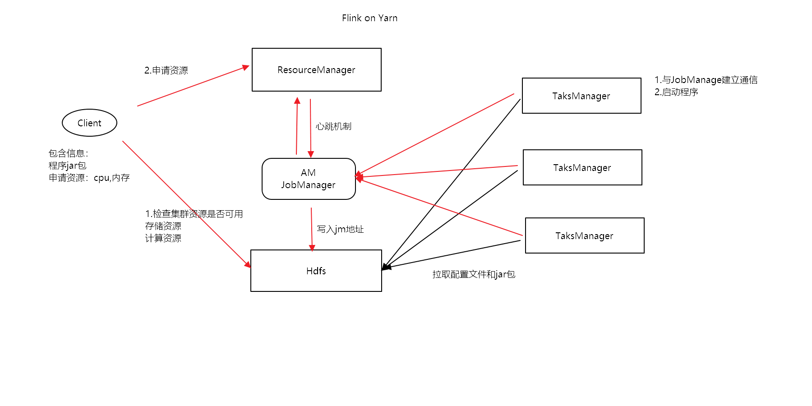

1.Client上传jar包和配置文件到HDFS集群上
2.Client向Yarn ResourceManager提交任务并申请资源
3.ResourceManager分配Container资源并启动ApplicationMaster,然后AppMaster加载Flink的Jar包和配置构建环境,启动JobManager
JobManager和ApplicationMaster运行在同一个container上。一旦他们被成功启动，AppMaster就知道JobManager的地址(AM它自己所在的机器)。它就会为TaskManager生成一个新的Flink配置文件(他们就可以连接到JobManager)。这个配置文件也被上传到HDFS上。此外，AppMaster容器也提供了Flink的web服务接口。YARN所分配的所有端口都是临时端口，这允许用户并行执行多个Flink
4.ApplicationMaster向ResourceManager申请工作资源,NodeManager加载Flink的Jar包和配置构建环境并启动TaskManager
5.TaskManager启动后向JobManager发送心跳包，并等待JobManager向其分配任务
3.1.4.2. 两种模式¶
3.1.4.2.1. Session会话模式¶
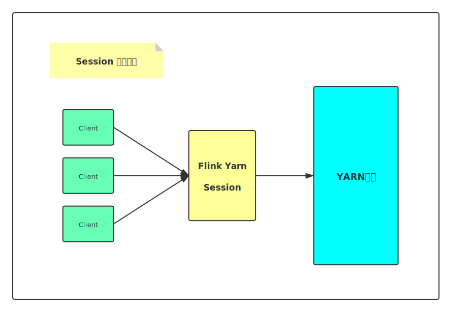
特点：需要事先申请资源，启动JobManager和TaskManger
优点：不需要每次递交作业申请资源，而是使用已经申请好的资源，从而提高执行效率
缺点：作业执行完成以后，资源不会被释放，因此一直会占用系统资源
应用场景：适合作业递交比较频繁的场景，小作业比较多的场景
3.1.4.2.1.1. 基本使用¶
命令行：
./yarn-session.sh -tm 1024 -jm 1024 -s 1 -d
tm： 每一个taskmanager的申请内存
jm：jobmanager的申请内存
-s ：slot的数量，cpu核数，表示并发执行能力
-d：跳出会话窗口
查看yarn列表
yarn application -list
kill session命令：
yarn application -kill application_1603091655912_0002
yarn session模式部署和standalone模式的区别：
session模式，申请好资源之后，不用，就不消耗资源，用的时候，才消耗资源
standalone,集群启动的时候，会自动申请好资源，不管用不用，资源会一直存在
3.1.4.2.2. Job分离模式¶
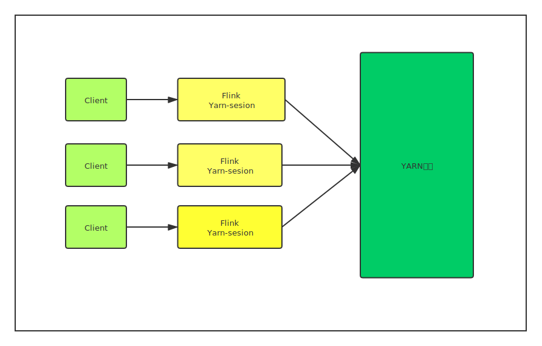
特点：每次递交作业都需要申请一次资源
优点：作业运行完成，资源会立刻被释放，不会一直占用系统资源
缺点：每次递交作业都需要申请资源，会影响执行效率，因为申请资源需要消耗时间
应用场景：适合作业比较少的场景、大作业的场景
执行命令：
flink run -m yarn-cluster -ytm 1024 -yjm 1024 -ys 1 ../examples/batch/WordCount.jar
-m: 指定cluster模式
-ytm :每一个taskmanager的申请内存
-yjm: jobmanager的申请内存
-ys： slot的数量
3.1.4.2.3. 两种模式的区别¶

3.2. Flink运行时组件¶
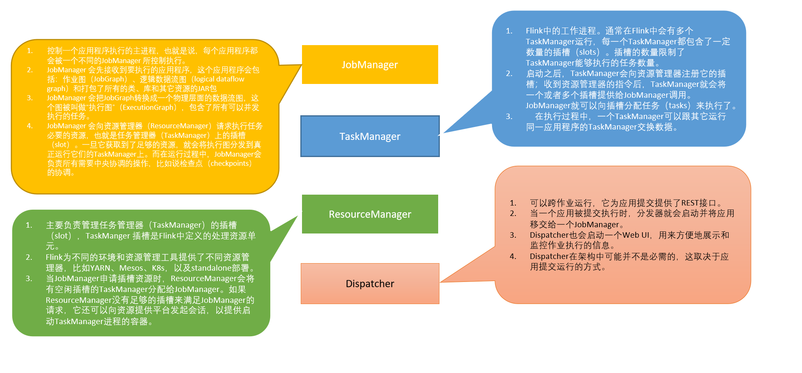
Flink运行时架构主要包括四个不同的组件，它们会在运行流处理应用程序时协同工作：
作业管理器（JobManager）：分配任务、调度checkpoint做快照
任务管理器（TaskManager）：主要干活的
资源管理器（ResourceManager）：管理分配资源
分发器（Dispatcher）：方便递交任务的接口，WebUI
因为Flink是用Java和Scala实现的，所以所有组件都会运行在Java虚拟机上。每个组件的职责如下：
作业管理器（JobManager）
控制一个应用程序执行的主进程，也就是说，每个应用程序都会被一个不同的JobManager 所控制执行。
JobManager 会先接收到要执行的应用程序，这个应用程序会包括：作业图（JobGraph）、逻辑数据流图（logical dataflow graph）和打包了所有的类、库和其它资源的JAR包。
JobManager 会把JobGraph转换成一个物理层面的数据流图，这个图被叫做“执行图”（ExecutionGraph），包含了所有可以并发执行的任务。
JobManager 会向资源管理器（ResourceManager）请求执行任务必要的资源，也就是任务管理器（TaskManager）上的插槽（slot）。一旦它获取到了足够的资源，就会将执行图分发到真正运行它们的TaskManager上。而在运行过程中，JobManager会负责所有需要中央协调的操作，比如说检查点（checkpoints）的协调。
任务管理器（TaskManager）
Flink中的工作进程。通常在Flink中会有多个TaskManager运行，每一个TaskManager都包含了一定数量的插槽（slots）。插槽的数量限制了TaskManager能够执行的任务数量。
启动之后，TaskManager会向资源管理器注册它的插槽；收到资源管理器的指令后，TaskManager就会将一个或者多个插槽提供给JobManager调用。JobManager就可以向插槽分配任务（tasks）来执行了。
在执行过程中，一个TaskManager可以跟其它运行同一应用程序的TaskManager交换数据。
资源管理器（ResourceManager）
主要负责管理任务管理器（TaskManager）的插槽（slot），TaskManger 插槽是Flink中定义的处理资源单元。
Flink为不同的环境和资源管理工具提供了不同资源管理器，比如YARN、Mesos、K8s，以及standalone部署。
当JobManager申请插槽资源时，ResourceManager会将有空闲插槽的TaskManager分配给JobManager。如果ResourceManager没有足够的插槽来满足JobManager的请求，它还可以向资源提供平台发起会话，以提供启动TaskManager进程的容器。
分发器（Dispatcher）
可以跨作业运行，它为应用提交提供了REST接口。
当一个应用被提交执行时，分发器就会启动并将应用移交给一个JobManager。
Dispatcher也会启动一个Web UI，用来方便地展示和监控作业执行的信息。
Dispatcher在架构中可能并不是必需的，这取决于应用提交运行的方式。
3.3. ExecutionGraph¶
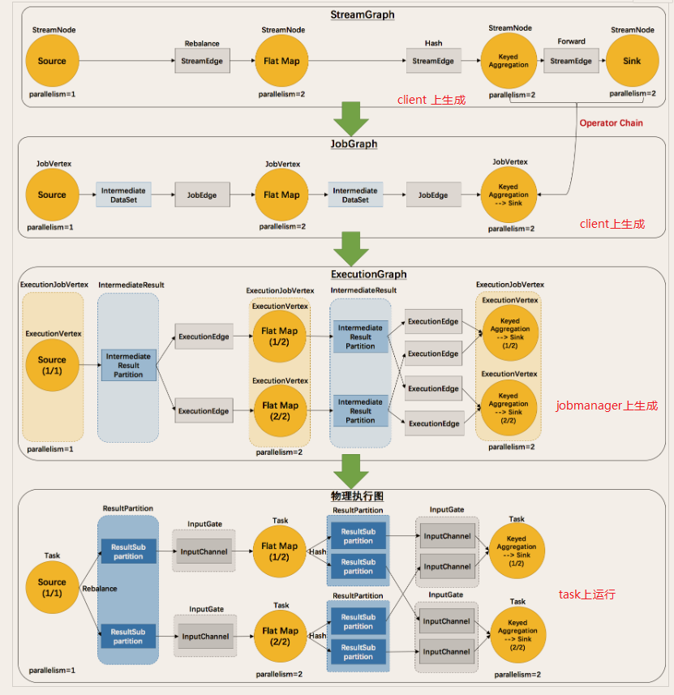
原理介绍
Flink执行executor会自动根据程序代码生成DAG数据流图
Flink 中的执行图可以分成四层：StreamGraph -> JobGraph -> ExecutionGraph -> 物理执行图。
StreamGraph：是根据用户通过 Stream API 编写的代码生成的最初的图。表示程序的拓扑结构。
JobGraph：StreamGraph经过优化后生成了 JobGraph，提交给 JobManager 的数据结构。主要的优化为，将多个符合条件的节点 chain 在一起作为一个节点，这样可以减少数据在节点之间流动所需要的序列化/反序列化/传输消耗。
ExecutionGraph：JobManager 根据 JobGraph 生成ExecutionGraph。ExecutionGraph是JobGraph的并行化版本，是调度层最核心的数据结构。
物理执行图：JobManager 根据 ExecutionGraph 对 Job 进行调度后，在各个TaskManager 上部署 Task 后形成的“图”，并不是一个具体的数据结构。
简单理解：
StreamGraph：最初的程序执行逻辑流程，也就是算子之间的前后顺序（全部都是Subtask）
JobGraph：将部分可以合并的Subtask合并成一个Task
ExecutionGraph：为Task赋予并行度
物理执行图：将Task赋予并行度后的执行流程，落实到具体的TaskManager上，将具体的Task落实到具体的Slot内进行运行。
3.4. 总体架构¶
本部分援引自网络，如有侵权请联系我删除
3.4.1. 核心组件¶
按照上面的介绍，Flink 核心架构的第二层是 Runtime 层， 该层采用标准的 Master - Slave 结构， 其中，Master 部分又包含了三个核心组件：Dispatcher、ResourceManager 和 JobManager，而 Slave 则主要是 TaskManager 进程。它们的功能分别如下：
JobManagers (也称为 masters) ：JobManagers 接收由 Dispatcher 传递过来的执行程序，该执行程序包含了作业图 (JobGraph)，逻辑数据流图 (logical dataflow graph) 及其所有的 classes 文件以及第三方类库 (libraries) 等等 。紧接着 JobManagers 会将 JobGraph 转换为执行图 (ExecutionGraph)，然后向 ResourceManager 申请资源来执行该任务，一旦申请到资源，就将执行图分发给对应的 TaskManagers 。因此每个作业 (Job) 至少有一个 JobManager；高可用部署下可以有多个 JobManagers，其中一个作为 leader，其余的则处于 standby 状态。
TaskManagers (也称为 workers) : TaskManagers 负责实际的子任务 (subtasks) 的执行，每个 TaskManagers 都拥有一定数量的 slots。Slot 是一组固定大小的资源的合集 (如计算能力，存储空间)。TaskManagers 启动后，会将其所拥有的 slots 注册到 ResourceManager 上，由 ResourceManager 进行统一管理。
Dispatcher：负责接收客户端提交的执行程序，并传递给 JobManager 。除此之外，它还提供了一个 WEB UI 界面，用于监控作业的执行情况。
ResourceManager ：负责管理 slots 并协调集群资源。ResourceManager 接收来自 JobManager 的资源请求，并将存在空闲 slots 的 TaskManagers 分配给 JobManager 执行任务。Flink 基于不同的部署平台，如 YARN , Mesos，K8s 等提供了不同的资源管理器，当 TaskManagers 没有足够的 slots 来执行任务时，它会向第三方平台发起会话来请求额外的资源。

3.4.2. Task & SubTask¶
上面我们提到：TaskManagers 实际执行的是 SubTask，而不是 Task，这里解释一下两者的区别：
我的个人理解：
Flink中的Task对应于Spark中的Stage，而Flink中的SubTask才对应与Spark中的Task，在Spark中遇到Shuffle时就会划分Stage，也就是说遇到宽依赖就会划分Stage，而在Flink中也和此类似，可以被链接到一起的算子作为一个Task，一些算子之间因为会产生shuffle所以不能被链接，就产生了另外的Task
在Spark中一个分区一个并行度也就是一个Task，按照上面的理解，在Flink中就是一个分区一个并行度也就是一个SubTask，在Spark中一个Stage下面有多个Task，在Flink中一个Task下有多个SubTask
在执行分布式计算时，Flink 将可以链接的操作 (operators) 链接到一起(Operator Chains)，这就是 Task。之所以这样做， 是为了减少线程间切换和缓冲而导致的开销，在降低延迟的同时可以提高整体的吞吐量。 但不是所有的 operator 都可以被链接，如下 keyBy 等操作会导致网络 shuffle 和重分区，因此其就不能被链接，只能被单独作为一个 Task。 简单来说，一个 Task 就是一个可以链接的最小的操作链 (Operator Chains) 。如下图，source 和 map 算子被链接到一块，因此整个作业就只有三个 Task：

解释完 Task ，我们在解释一下什么是 SubTask，其准确的翻译是： A subtask is one parallel slice of a task，即一个 Task 可以按照其并行度拆分为多个 SubTask。如上图，source & map 具有两个并行度，KeyBy 具有两个并行度，Sink 具有一个并行度，因此整个虽然只有 3 个 Task，但是却有 5 个 SubTask。Jobmanager 负责定义和拆分这些 SubTask，并将其交给 Taskmanagers 来执行，每个 SubTask 都是一个单独的线程。
3.4.3. 资源管理¶
理解了 SubTasks ，我们再来看看其与 Slots 的对应情况。一种可能的分配情况如下：

这时每个 SubTask 线程运行在一个独立的 TaskSlot， 它们共享所属的 TaskManager 进程的TCP 连接（通过多路复用技术）和心跳信息 (heartbeat messages)，从而可以降低整体的性能开销。此时看似是最好的情况，但是每个操作需要的资源都是不尽相同的，这里假设该作业 keyBy 操作所需资源的数量比 Sink 多很多 ，那么此时 Sink 所在 Slot 的资源就没有得到有效的利用。
基于这个原因，Flink 允许多个 subtasks 共享 slots，即使它们是不同 tasks 的 subtasks，但只要它们来自同一个 Job 就可以。假设上面 souce & map 和 keyBy 的并行度调整为 6，而 Slot 的数量不变，此时情况如下：

可以看到一个 Task Slot 中运行了多个 SubTask 子任务，此时每个子任务仍然在一个独立的线程中执行，只不过共享一组 Slot 资源而已。那么 Flink 到底如何确定一个 Job 至少需要多少个 Slot 呢？Flink 对于这个问题的处理很简单，默认情况一个 Job 所需要的 Slot 的数量就等于其 Operation 操作的最高并行度。如下， A，B，D 操作的并行度为 4，而 C，E 操作的并行度为 2，那么此时整个 Job 就需要至少四个 Slots 来完成。通过这个机制，Flink 就可以不必去关心一个 Job 到底会被拆分为多少个 Tasks 和 SubTasks。

3.4.4. 组件通讯¶
Flink 的所有组件都基于 Actor System 来进行通讯。Actor system是多种角色的 actor 的容器，它提供调度，配置，日志记录等多种服务，并包含一个可以启动所有 actor 的线程池，如果 actor 是本地的，则消息通过共享内存进行共享，但如果 actor 是远程的，则通过 RPC 的调用来传递消息。

3.5. 广播变量¶
Flink支持广播。可以将数据广播到TaskManager上就可以供TaskManager中的SubTask/task去使用，数据存储到内存中。这样可以减少大量的shuffle操作，而不需要多次传递给集群节点；
比如在数据join阶段，不可避免的就是大量的shuffle操作，我们可以把其中一个dataSet广播出去，一直加载到taskManager的内存中，可以直接在内存中拿数据，避免了大量的shuffle，导致集群性能下降；
注意：
广播变量是要把dataset广播到内存中，所以广播的数据量不能太大，否则会出现OOM
广播变量的值不可修改，这样才能确保每个节点获取到的值都是一致的
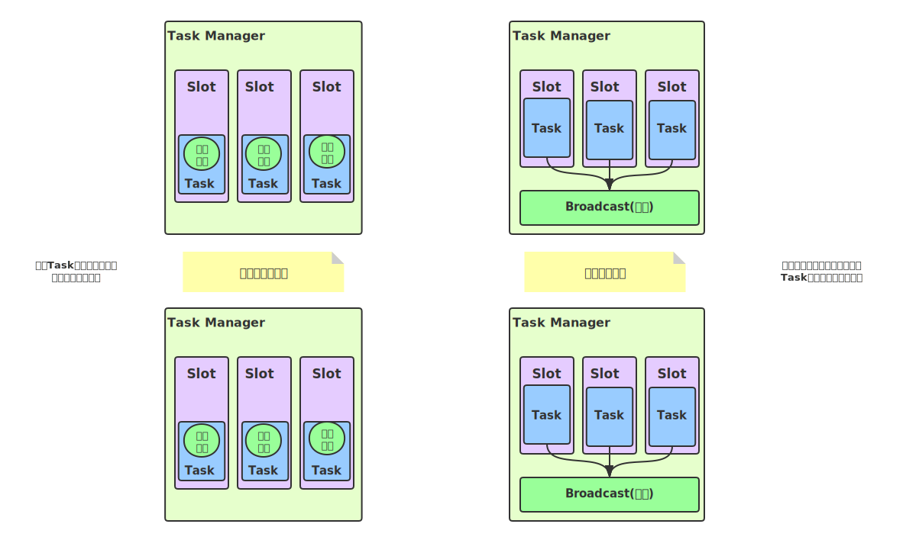
3.5.1. 如何使用¶
编码步骤:
1：广播数据
.withBroadcastSet(DataSet, “name”);
2：获取广播的数据
Collection<> broadcastSet = getRuntimeContext().getBroadcastVariable(“name”);
3:使用广播数据
3.6. 分布式缓存¶
Flink提供了一个分布式缓存，类似于hadoop，可以使用户在并行函数中很方便的读取本地文件，并把它放在taskmanager节点中，防止task重复拉取。
此缓存的工作机制如下：程序注册一个文件或者目录(本地或者远程文件系统，例如hdfs或者s3)，通过ExecutionEnvironment注册缓存文件并为它起一个名称。
当程序执行，Flink自动将文件或者目录复制到所有taskmanager节点的本地文件系统，仅会执行一次。用户可以通过这个指定的名称查找文件或者目录，然后从taskmanager节点的本地文件系统访问它。
3.6.1. 如何使用¶
编码步骤:
1：注册一个分布式缓存文件
env.registerCachedFile(“hdfs:///path/file”, “cachefilename”)
2：访问分布式缓存文件中的数据
File myFile = getRuntimeContext().getDistributedCache().getFile(“cachefilename”);
开发步骤：
1.获取执行环境
2.加载数据源
3.注册分布式缓存文件
4.数据转换
（1）获取分布式缓存文件
（2）FileUtils解析文件
（3）数据组合
5.数据打印执行
3.7. State¶
3.7.1. Keyed State & Operator State¶
Managed State的有KeyedState和OperatorState
Raw State的都是OperatorState
3.7.1.1. Keyed State¶
顾名思义就是Keyed Stream上的State，其与流上的特定的key绑定，对于流上每一个key可能都对应于一个State
ValueState getState(ValueStateDescriptor)
ReducingState getReducingState(ReducingStateDescriptor)
这种状态通过用户传入的reduceFunction，每次调用
add方法添加值的时候，会调用reduceFunction，最后合并到一个单一的状态值
ListState getListState(ListStateDescriptor)
FoldingState getFoldingState(FoldingStateDescriptor)
跟ReducingState有点类似，不过它的状态值类型可以与
add方法中传入的元素类型不同（这种状态将会在Flink未来版本中被删除）
MapState getMapState(MapStateDescriptor)
即状态值为一个map。用户通过
put或putAll方法添加元素
Flink通过
StateDescriptor来定义一个状态。这是一个抽象类，内部定义了状态名称、类型、序列化器等基础信息。与上面的状态对应，从StateDescriptor派生了ValueStateDescriptor,ListStateDescriptor等descriptor。
一个使用MapState的样例：
/**
* @ClassName: MinStockWindowFunction
* @Author: Roohom
* @Function: 分时个股窗口处理
* @Date: 2020/11/2 15:00
* @Software: IntelliJ IDEA
*/
public class MinStockWindowFunction extends RichWindowFunction<CleanBean, StockBean, String, TimeWindow> {
MapState<String, StockBean> stockMs = null;
/**
* @param parameters
* @throws Exception
*/
@Override
public void open(Configuration parameters) throws Exception {
stockMs = getRuntimeContext().getMapState(new MapStateDescriptor<String, StockBean>("stockMs", String.class, StockBean.class));
}
/**
* @param s 分组字段
* @param window 窗口
* @param input 输入数据
* @param out 输出数据
* @throws Exception PASS
*/
@Override
public void apply(String s, TimeWindow window, Iterable<CleanBean> input, Collector<StockBean> out) throws Exception {
//记录最新个股
CleanBean cleanBean = null;
for (CleanBean bean : input) {
if (cleanBean == null) {
cleanBean = bean;
}
if (cleanBean.getEventTime() < bean.getEventTime()) {
cleanBean = bean;
}
}
//获取分时成交额和成交数量
StockBean stockBeanLast = stockMs.get(cleanBean.getSecCode());
Long tradeVol = 0L;
Long tradeAmt = 0L;
if (stockBeanLast != null) {
//获取上一分钟的成交金额和成交数量
Long tradeVolDayLast = stockBeanLast.getTradeVolDay();
Long tradeAmtDayLast = stockBeanLast.getTradeAmtDay();
//分时成交量,分时成交量 （当前分钟的总成交量- 上一分钟的总成交量）
tradeVol = cleanBean.getTradeVolume() - tradeVolDayLast;
//分时成交金额,分时成交金额 （当前分钟的总成交金额- 上一分钟的总成交金额）
tradeAmt = cleanBean.getTradeAmt() - tradeAmtDayLast;
}
Long tradeTime = DateUtil.longTimeTransfer(cleanBean.getEventTime(), Constant.format_YYYYMMDDHHMMSS);
//封装输出流数据
StockBean stockBean = new StockBean(
cleanBean.getEventTime(),
cleanBean.getSecCode(),
cleanBean.getSecName(),
cleanBean.getPreClosePrice(),
cleanBean.getOpenPrice(),
cleanBean.getMaxPrice(),
cleanBean.getMinPrice(),
cleanBean.getTradePrice(),
tradeVol, tradeAmt,
cleanBean.getTradeVolume(),
cleanBean.getTradeAmt(),
tradeTime,
cleanBean.getSource()
);
out.collect(stockBean);
//更新MapState
stockMs.put(cleanBean.getSecCode(), stockBean);
}
}
3.7.1.2. Operator State¶
Operator State与特定的算子Operator进行绑定，整个Operator只对应于一个State，而在一个算子operator上可能有多个key，也就对应多个keyed state
3.7.2. Managed State & Raw State¶
托管状态
由Flink本身去管理，将状态数据转换为HashTables或者RocksDB对象进行存储，然后持久化于Checkpoint，用于异常恢复
原生状态
算子自身管理数据结构，触发Checkpoint后，将数据转换为Bytes，然后存储在Checkpoint上，异常恢复时，由算子自身进行反序列化Bytes获得数据
两者相同点：
都依赖于Checkpoint
不同点：
从状态管理方式的方式来说，Managed State 由 Flink Runtime 管理，自动存储，自动恢复，在内存管理上有优化；而 Raw State 需要用户自己管理，需要自己序列化，Flink 不知道 State 中存入的数据是什么结构，只有用户自己知道，需要最终序列化为可存储的数据结构。
从状态数据结构来说，Managed State 支持已知的数据结构，如 Value、List、Map 等。而 Raw State只支持字节数组 ，所有状态都要转换为二进制字节数组才可以。
从推荐使用场景来说，Managed State 大多数情况下均可使用，而 Raw State 是当 Managed State 不够用时，比如需要自定义 Operator 时，才会使用 Raw State。
3.8. 容错机制¶
3.8.1. Checkpoint¶
某一时刻,Flink中所有的Operator的当前State的全局快照,一般存在磁盘上，表示了一个Flink Job在一个特定时刻的一份全局状态快照，即包含了所有Operator的状态，可以理解为Checkpoint是把State数据定时持久化存储了
比如KafkaConsumer算子中维护的Offset状态,当任务重新恢复的时候可以从Checkpoint中获取
3.8.2. 执行流程¶
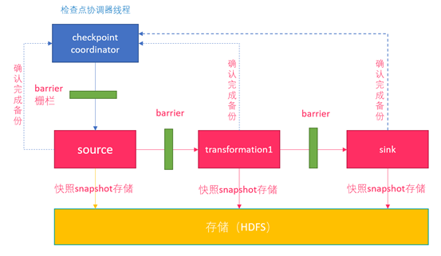
0.Flink的JobManager创建CheckpointCoordinator
1.Coordinator向所有的SourceOperator发送Barrier栅栏(理解为执行Checkpoint的信号)
2.SourceOperator接收到Barrier之后,暂停当前的操作(暂停的时间很短,因为后续的写快照是异步的),并制作State快照, 然后将自己的快照保存到指定的介质中(如HDFS), 一切 ok之后向Coordinator汇报并将Barrier发送给下游的其他Operator
3.其他的如TransformationOperator接收到Barrier,重复第2步,最后将Barrier发送给Sink
4.Sink接收到Barrier之后重复第2步
5.Coordinator接收到所有的Operator的执行ok的汇报结果,认为本次快照执行成功
注意:
1.在往介质(如HDFS)中写入快照数据的时候是异步的(为了提供效率)
2.分布式快照执行时的数据一致性由Chandy-Lamport algorithm分布式快照算法保证!
3.8.3. State状态后端/State存储介质¶
Checkpoint是Flink在某一时刻的所有Operator的全局快照，这些快照的存储就叫状态后端
MemStateBackend
存储在内存，不安全，不推荐使用
FsStateBackend
存储在文件系统上，可以是本地可以是HDFS等（如果在分布式的情况下选择存储本地，可能会使得恢复失败）
常规使用状态的作业、例如分钟级窗口聚合或 join、需要开启HA的作业
RocksDBStateBackend
RocksDB 是一个 key/value 的内存存储系统，和其他的 key/value 一样，先将状态放到内存中，如果内存快满时，则写入到磁盘中
存储在外部存储系统
超大状态的作业，例如天级窗口聚合、需要开启 HA 的作业、最好是对状态读写性能要求不高的作业
3.8.4. Savepoint¶
实际中为了对集群进行停机维护扩容等，需要将集群的状态暂时备份，共维护完成后从维护前的状态继续运行，也就是需要开发人员执行一次手动的Checkpoint，与Checkpoint不同的是（简单理解），Savepoint是手动触发的。
3.8.5. Savepoint和Checkpoint的对比¶
1.目标：从概念上讲，Savepoints和Checkpoints的不同之处类似于传统数据库中备份和恢复日志的不同。Checkpoints的作用是确保程序有潜在失败可能的情况下（如网络暂时异常）,可以正常恢复。相反，Savepoints的作用是让用户手动触发备份后，通过重启来恢复程序。
2.实现：Checkpoints和Savepoints在实现上有所不同。Checkpoints轻量并且快速，它可以利用底层状态存储的各种特性，来实现快速备份和恢复。例如，以RocksDB作为状态存储，状态将会以RocksDB的格式持久化而不是Flink原生的格式，同时利用RocksDB的特性实现了增量Checkpoints。这个特性加速了checkpointing的过程，也是Checkpointing机制中第一个更轻量的实现。相反，Savepoints更注重数据的可移植性，并且支持任何对任务的修改，同时这也让Savepoints的备份和恢复成本相对更高。
3.生命周期：Checkpoints本身是定时自动触发的。它们的维护、创建和删除都由Flink自身来操作，不需要任何用户的干预。相反，Savepoints的触发、删除和管理等操作都需要用户手动触发。
3.9. End To End Exactly-Once¶
整合Kafka
Exactly Once是指所有的记录仅影响内部状态一次
而
End to End Exactly Once是指所有的记录仅影响内部和外部状态一次
3.9.1. 版本说明¶
Flink 1.4版本之前，支持Exactly Once语义，仅限于应用内部。
Flink 1.4版本之后，通过两阶段提交(TwoPhaseCommitSinkFunction)支持End-To-End Exactly Once，而且要求Kafka 0.11+。
利用TwoPhaseCommitSinkFunction是通用的管理方案，只要实现对应的接口，而且Sink的存储支持变乱提交，即可实现端到端的一次性语义。
在 Flink 中的Two-Phase-Commit-2PC两阶段提交的实现方法被封装到了 TwoPhaseCommitSinkFunction 这个抽象类中，只需要实现其中的beginTransaction、preCommit、commit、abort 四个方法就可以实现“精确一次”的处理语义，如FlinkKafkaProducer就实现了该类并实现了这些方法
3.9.2. 具体流程¶
3.9.2.2. 预提交 内部状态¶
3.9.2.2.1. Checkpointing¶
Checkpoint开始的时候，即进入“预提交阶段”，Flink的JobManager会将Barrier注入数据流，barrier在Operator之间进行传递，所到之处的Operator将状态快照写入State Backend
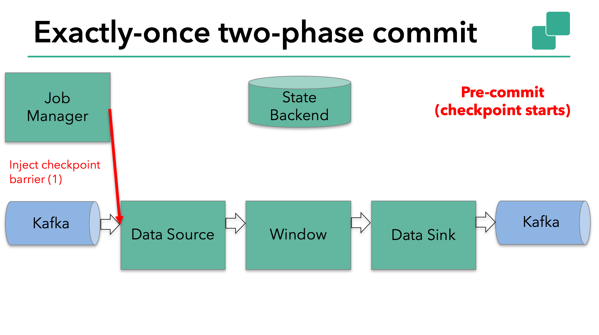
数据源保存了消费Kafka的偏移量(offset)，之后将checkpoint barrier传递给下一个operator。
这种方式仅适用于operator具有内部状态。所谓内部状态，是指Flink state backend保存和管理的 。例如，第二个operator中window聚合算出来的sum值。当一个进程有它的内部状态的时候，除了在checkpoint之前需要将数据变更写入到state backend，不需要在预提交阶段执行任何其他操作。Flink负责在checkpoint成功的情况下正确提交这些写入，或者在出现故障时中止这些写入
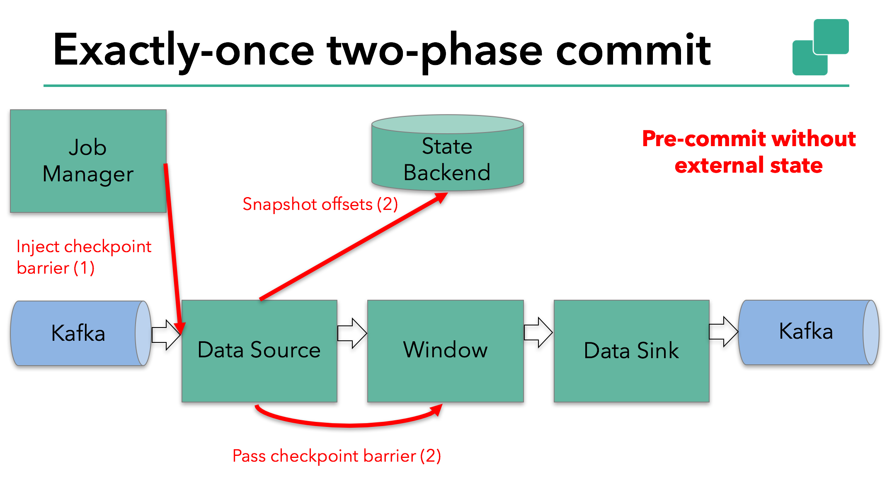
3.9.2.2.2. 预提交外部状态¶
外部数据源也必须具有事务机制，才能保证两阶段提交协议的集成，而Kakfa满足这一点，在该示例中的数据需要写入Kafka，因此数据输出端（Data Sink）有外部状态。在这种情况下，在预提交阶段，除了将其状态写入state backend之外，数据输出端还必须预先提交其外部事务。
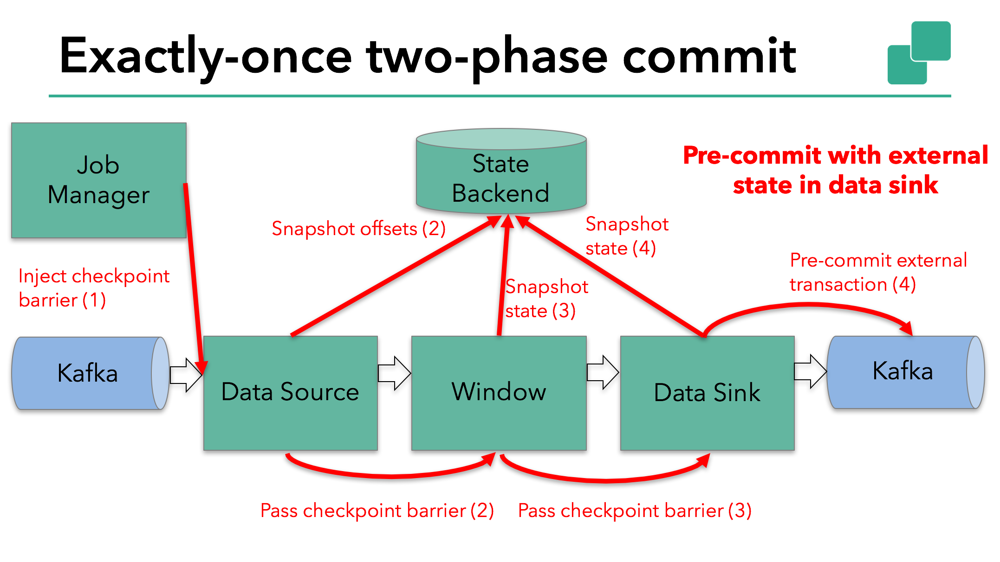
当Checkpoint Barrier在所有的Operator之间传递完成之后，并且所有的Operator快照都已制作完成时，预提交阶段即完成，所有的状态快照都属于Checkpoint的一部分，Checkpoint是整个应用程序状态的快照，包含预先提交的外部状态，当程序发生故障或者突然宕机时，Flink可以将所有状态依据最近的一个成功的Checkpoint恢复到上次快照的时间点
3.9.2.2.3. 提交阶段¶
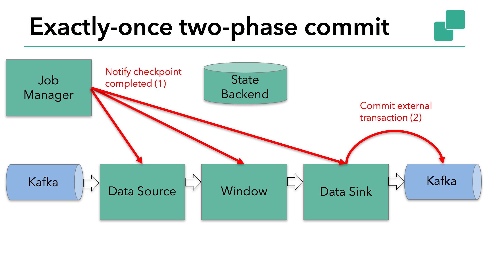
进入提交阶段，Job Manager通知所有的Operator Checkpoint已经制作完成了，这些Operator只要负责等待就行，不必进行其他的操作，Data Sink端开始进行外部事务的提交
3.9.2.2.4. 总结¶
1.一旦所有operator完成预提交，就提交一个commit。
2.如果只要有一个预提交失败，则所有其他提交都将中止，我们将回滚到上一个成功完成的checkpoint。
3.在预提交成功之后，提交的commit需要保证最终成功 – operator和外部系统都需要保障这点。如果commit失败（例如，由于间歇性网络问题），整个Flink应用程序将失败，应用程序将根据用户的重启策略重新启动，还会尝试再提交。这个过程至关重要，因为如果commit最终没有成功，将会导致数据丢失。
4.完整的实现两阶段提交协议可能有点复杂，这就是为什么Flink将它的通用逻辑提取到抽象类TwoPhaseCommitSinkFunction中的原因。
3.10. 并行度¶
一个Flink程序由多个Operator来执行，一个Operator又由多个Task（线程）来执行， 一个Operator的并行Task(线程)数目就被称为该Operator(任务)的并行度(Parallelism)
3.10.1. 并行度的设置方式¶
Operator Level（算子级别）
一个算子、数据源和sink的并行度可以通过调用 setParallelism()方法来指定
Execution Environment Level（Env级别）
执行环境(任务)的默认并行度可以通过调用setParallelism()方法指定。为了以并行度3来执行所有的算子、数据源和data sink，可以通过设置执行环境全部并行度的方式设置并行度
StreamExecutionEnviroment env = StreamExecutionEnviroment.getExecutionEnviroment(); env.setParallelism(3);
Client Level(客户端级别,推荐使用)
在客户端程序提交到Flink时在命令行或者参数设置
对于Cli客户端可以是用参数
-p来设置并行度./bin/flink run -p 10 WordCount-java.jar
System Level（系统默认级别,尽量不使用）
在系统级可以通过设置flink-conf.yaml文件中的parallelism.default属性来指定所有执行环境的默认并行度
3.10.2. 设置并行度的级别¶
算子级别 > env级别 > Client级别 > 系统默认级别
越靠前具体的代码并行度的优先级越高
注意：
1.并行度的优先级：算子级别 > env级别 > Client级别 > 系统默认级别 (越靠前具体的代码并行度的优先级越高)
2.如果source不可以被并行执行，即使指定了并行度为多个，也不会生效
3.在实际生产中，我们推荐在算子级别显示指定各自的并行度，方便进行显示和精确的资源控制。
4.slot是静态的概念，是指taskmanager具有的并发执行能力; parallelism是动态的概念，是指程序运行时实际使用的并发能力